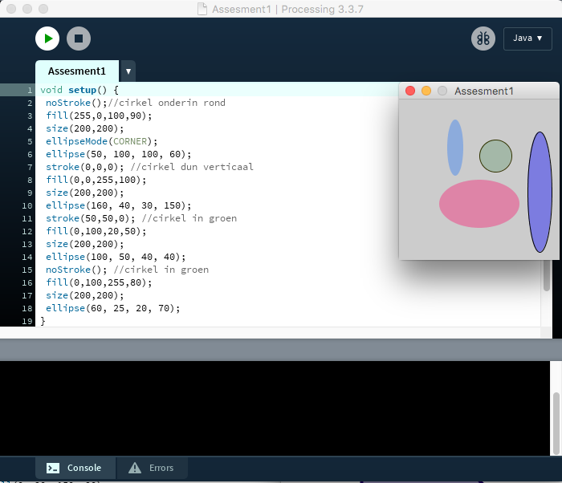
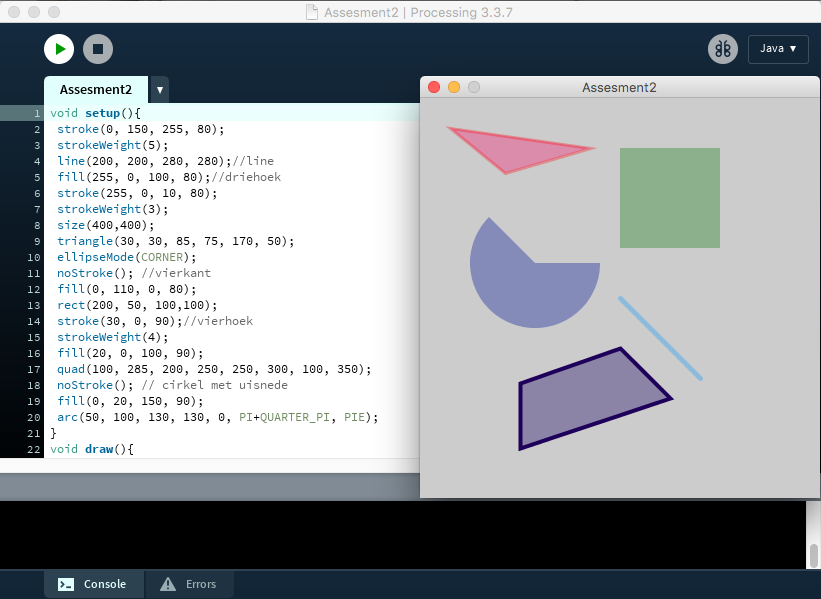
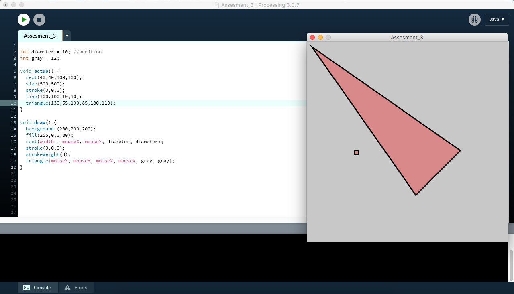
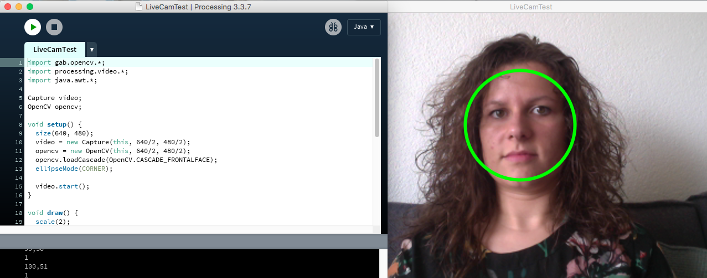
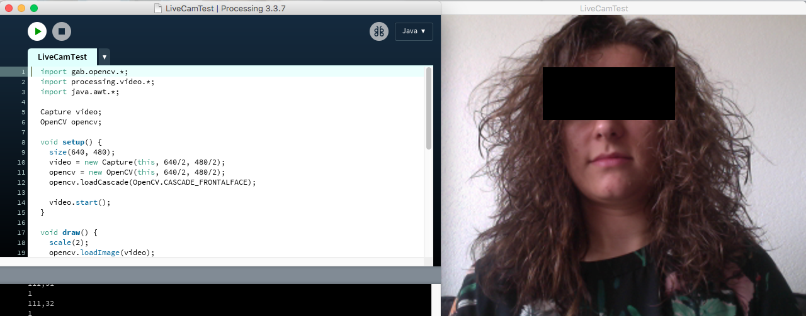
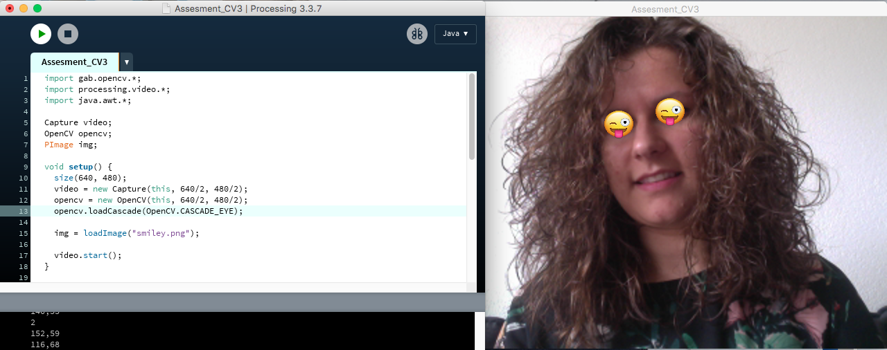

Bij deze opdracht was het de bedoeling om verschillende cirkels te maken met verschillende vormen, afmetingen, kleuren en posities. Per cirkel ben ik aan de slag gegaan met eerst de vorm bepalen, dan de kleur en vervolgens de positie. Ook heb ik gespeeld met het gebruik van een lijn om de cirkel en met de transparantie van de kleur. Hiermee heb ik geprobeerd om er een leuk geheel van te maken.
Bij deze opdracht was het de bedoeling om verschillende vormen te maken met verschillende vormen, afmetingen, kleuren en posities. Hierbij heb ik eerst de vormen gemaakt die ik wilde plaatsen en vervolgens ben ik het uiterlijk van de vormen aan gaan passen. Tot slot heb ik ze op e positie gezet dat ze los van elkaar staan.
Bij deze opdracht was het de bedoeling vormen te maken die muis volgen. Zo ben ik eerst aan de slag gegaan om de vormen te maken en heb ik daarna pas gekeken hoe ik het voor elkaar moest krijgen om de vormen te laten bewegen. Het koste wat moeite omdat het eerst alleen schuin naar beneden wilde bewegen en de vormen op elkaar bleven plakken. Gelukkig was het een beetje proberen met de code en lukte het uiteindelijk wel om de figuren over het hele scherm te laten bewegen.
Bij deze opdracht was het de bedoeling om de webcam aan te laten gaan en de cirkel op je gezicht te projecteren. De gebruiksaanwijzing waren erg duidelijk, dus het lukte al snel om de camera aan te laten gaan. In eerste instantie was het zo dat de cirkel niet in het midden van mijn gezicht stond. Dit was snel opgelost door een klein stukje code aan te passen.
Bij deze opdracht was het de bedoeling dat je voor je ogen een zwart balkje tevoorschijn moest komen. Hierbij moest je eerst de focus veranderen van het hele gezicht naar de ogen en vervolgens hier een balkje van maken.
Bij deze opdracht was het bedoeling om zelf een beeld samen te stellen. Ik heb ervoor gekozen om een beeld te gebruiken die in de plaats van de ogen komen te staan. Zo heb ik op beide ogen een smiley geplaatst voor een leuk en vrolijk beeld.
